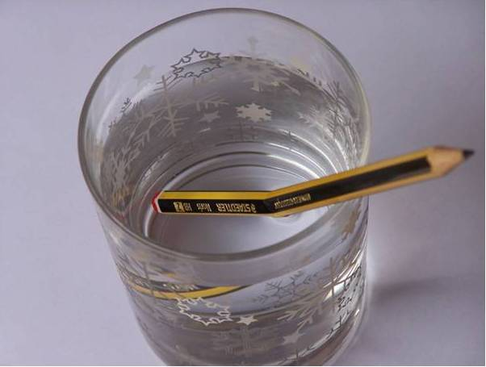
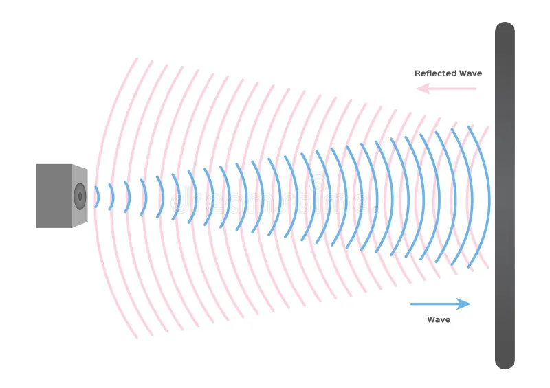
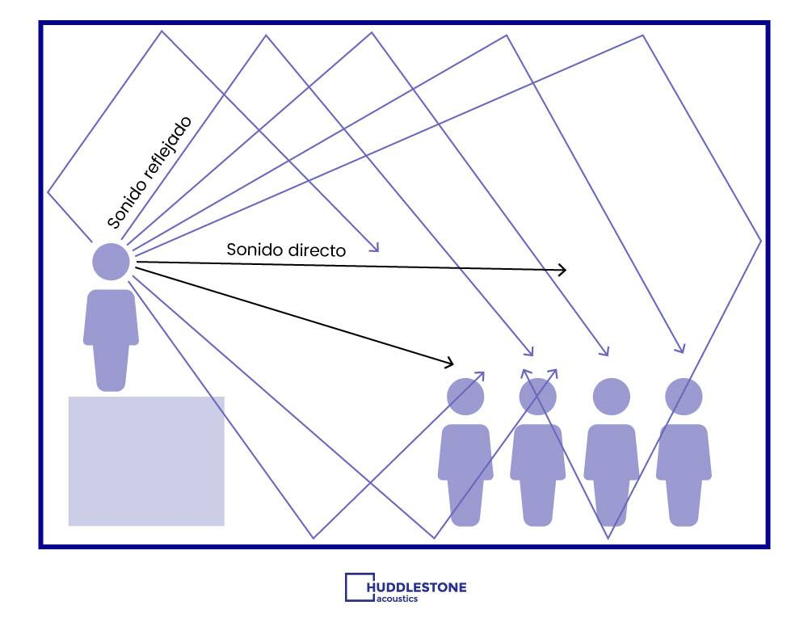
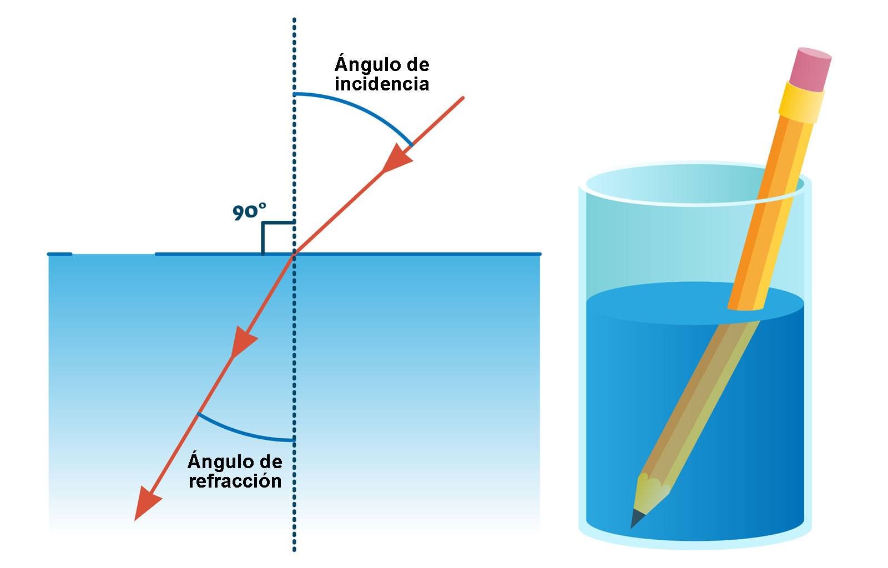
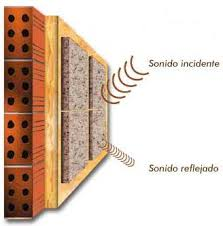
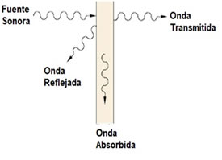

Fenómenos ondulatorios
Objetivo
Comprender los fenómenos ondulatorios en distintos medios
Fenómenos a estudiar
- Reflexión
- Refracción
- Difracción
- Interferencia
- Absorción
- Resonancia
- Efecto Doppler
Reflexión
Reflexión: Es el cambio de dirección de la propagación de la onda al incidir en una separación de dos medios. Continúa la onda en el mismo medio.

Reflexión
Reflexión: Es el cambio de dirección de la propagación de la onda al incidir en una separación de dos medios. Continúa la onda en el mismo medio.

Reflexión: Eco y Reverberación


Refracción
Refracción: Es el cambio de dirección de la propagación de la onda al pasar de un medio a otro diferente.

Refracción
Refracción: Es el cambio de dirección de la propagación de la onda al pasar de un medio a otro diferente.

Simulación: Refracción
Absorción
Absorción: Al atravesar un medio, le cede energía disminuyendo su amplitud.

Absorción
Absorción: Al atravesar un medio, le cede energía disminuyendo su amplitud.
Reflexión, Refracción y Absorción

El ángulo de la onda incidente y la reflejada son de igual medida. La onda refractada cambia de dirección al pasar de un medio a otro. La onda absorbida pierde energía
Difracción
Difracción: Es la desviación de las ondas cuando encuentran un obstáculo o una abertura.

Difracción
Difracción: Es la desviación de las ondas cuando encuentran un obstáculo o una abertura.
Ticket de salida
A) Reflexión
B) Refracción
C) Difracción
D) Absorción
A) Refracción
B) Interferencia
C) Reflexión
D) Resonancia